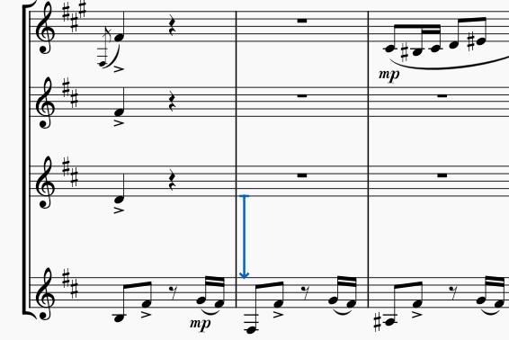
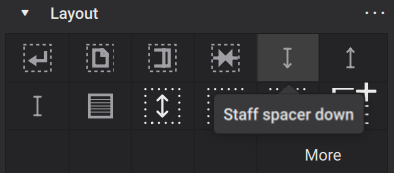
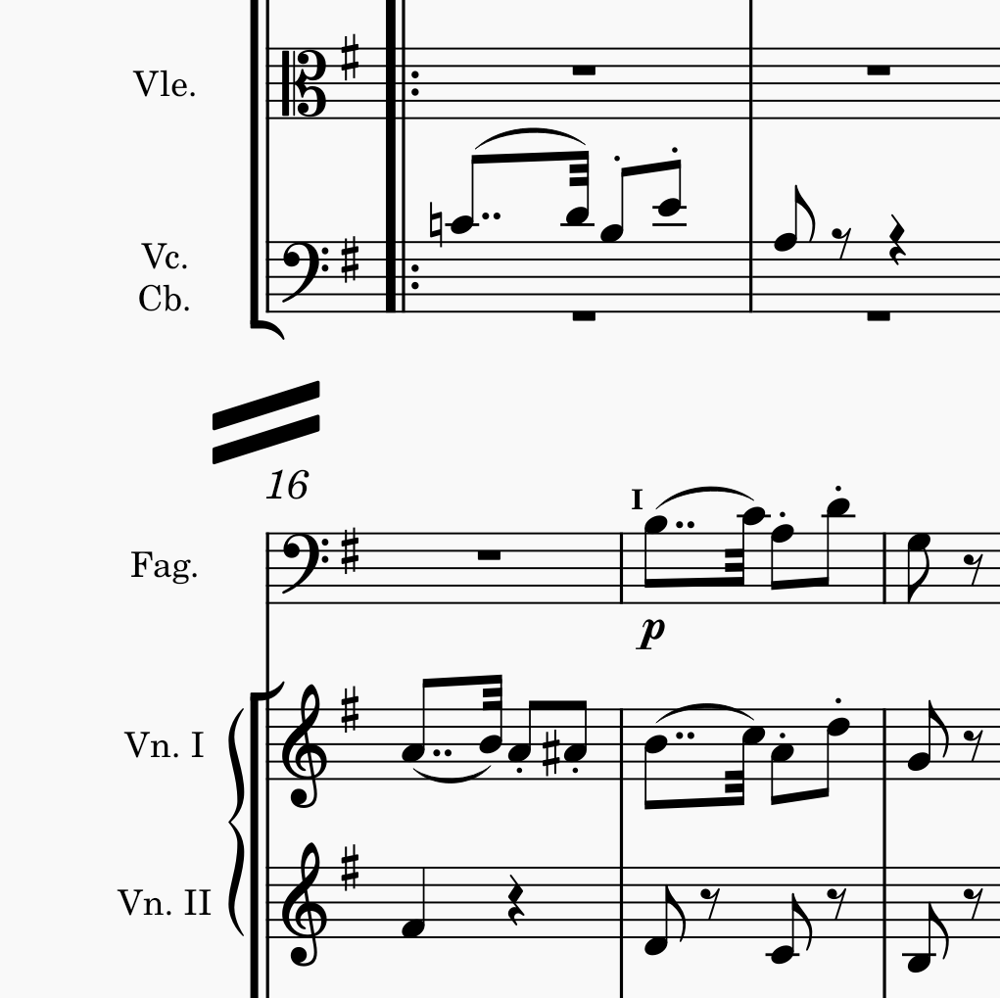

Pages and vertical spacing
Features
As described in Vertical spacing, MuseScore fills each page with as many systems as can fit given the current score settings, and then adjusts the spacing within each page according to one of two different algorithms. You can also adjust the number of systems on a page, or the spacing between specific staves or systems, manually.
Page breaks
A page break causes MuseScore to end a page after a given system, even if more systems would fit. To add a page break, select a measure or frame and then either press Ctrl+Enter (Cmd+Enter on Mac) or click the Page break icon in the Layout palette:

Spacers
A spacer is a formatting element you can add to a measure to control the amount of space above or below that particular staff. Spacers can work to either add or remove space, and they can operate either within or between systems.

To add a spacer to your score, select a measure and then click the appropriate icon in the Layout palette:

You can also drag and drop a spacer from the palette to a measure in your score.
Once you have added a spacer, you can adjust its height by selecting it and dragging its handle, or by using the Height setting in the Properties panel. There are three different types of spacers, and the height setting affects the score differently according to the spacer type:
- Staff spacer down: ensure there is at least the specified given amount of space below this staff
- Staff spacer up: ensure there is at least the specified amount of space above this staff
- Staff spacer fixed down: ensure there is exactly the specified amount of space below this staff
In all cases, the spacer works within a system when added between staves of a system. In addition, a Staff spacer down or Staff spacer fixed down works between systems when added to the bottom staff of a system, and a Staff spacer up works between systems when added to the top staff of a system.
Vertical frames
A vertical frame is a container for empty space, text, or images, that can be placed between systems in a score. Although vertical frames can be left empty and thus function in a manner similar to spacers, the primary purpose of vertical frames is to add text or images. For more information, see Using frames for additional content.

System dividers
In ensemble music in which multiple systems fit on a single page of music, it is common to use system dividers—a pair of diagonal strokes at either end of and vertically centered between systems. This can help to clarify the division between the systems.

System dividers can be added automatically via the settings in Format -> Style -> System. You can enable Left and Right dividers independently. For each, a number of settings may be customized:
- Symbol size: Choose between Normal, Long and Extra long.
- Scale: Symbol scale in percent.
- Offsets (horizontal and vertical): Distance from default position.
- Horizontal alignment: System dividers may be centered on the outermost system barline on a page, or aligned to the page margin.
Tasks
The feature listed above can be used to achieve a number of common tasks.
Placing fewer systems on a page
To place fewer systems on a page, simply add a page break to the system or frame you wish to appear last on the page.
Placing more systems on a page
As with horizontal spacing, in some cases it might not be possible to fit more systems onto a page than your current settings permit. So you may also want to consider a smaller staff size, or reducing the minimum system distance score-wide, or other style changes. However, in some cases you may be able to fit more systems on a page by manually reducing the distance between specific systems.
To reduce the distance between two specific systems, add a Staff spacer fixed down to the bottom staff of the upper system, then set its height as desired. If this reduction allows another system to fit on the page, then it will happen automatically.
Adjusting the spacing on sparse pages
MuseScore normally spreads systems and staves out to fill a page (see Vertical spacing for more information). Whether you enable or disable vertical justification, however, pages that are especially sparse may still look awkward. This is especially common for the last page of a score, where it is possible more systems could have fit.
In many cases, the best results would be obtained by planning the system and/or page breaks throughout the score to avoid these overly sparse pages. But in cases where this is unavoidable, you will need to decide where you want the extra space—all at the bottom of the page, equally divided between the top and bottom, dispersed between systems, or dispersed between staves within systems as well as between systems.
To force all extra space to the bottom of the page, once solution is to add a Staff spacer down below the last system, and adjust its height as appropriate to take the space you wish to leave below. Another is to reduce either the Maximum system distance or Maximum page fill distance (see Vertical spacing). These settings may affect other pages as well, but in most cases, they will only be relevant for especially sparse pages.
To force some space at the top of the page, you can add a Staff spacer up above the first system.
To change the distribution of space between systems and staves within systems, be sure Enable vertical justification of staves is enabled in Format -> Style -> Page, then adjust Factor for distance between systems. A value of 1.0 means that space is equally distributed within and between systems. Larger values mean that more of the available space will be allocated between systems as opposed to within them.
Adjusting space between specific systems
To add space between two specific systems, add a Staff spacer down to the bottom staff of the upper system, or a Staff spacer up to the top staff of the lower system.
Adjusting space between specific staves
To add space between specific staves within a single system, add a Staff spacer down to the upper staff, or a Staff spacer up to the lower staff.
To add space between specific staves across all systems—such as to separate piano accompaniment from the vocal staves in a choral score—right-click the lower staff, select Staff/Part properties, and increase the Extra distance above staff setting.